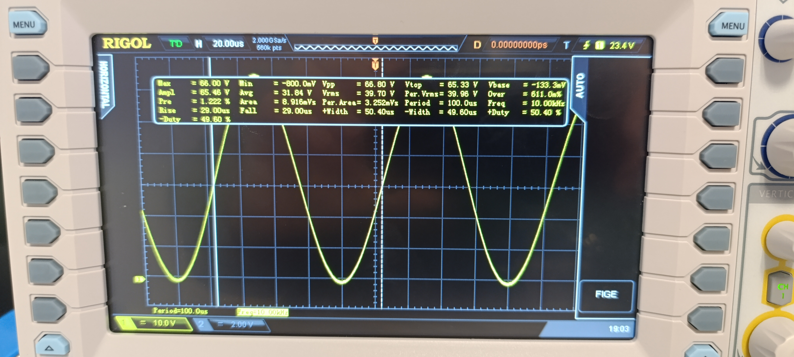
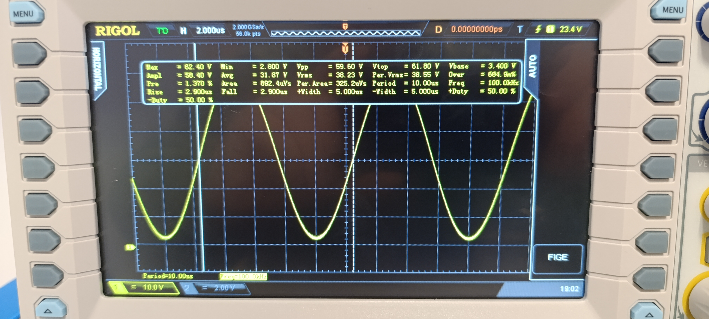
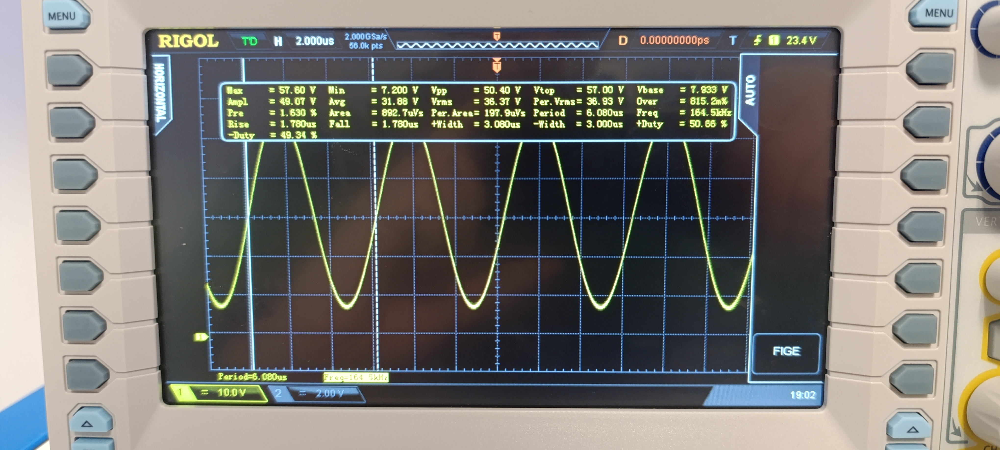
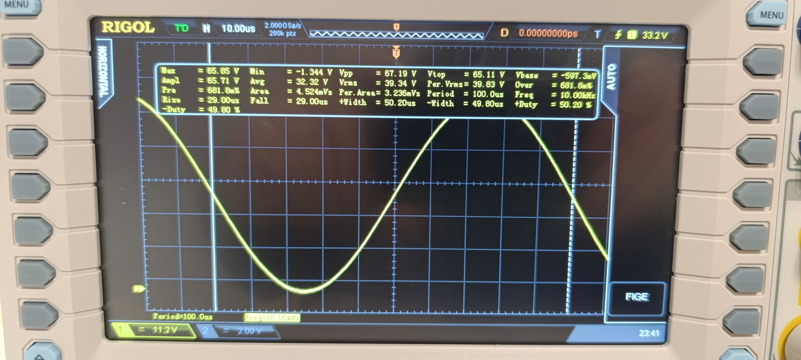
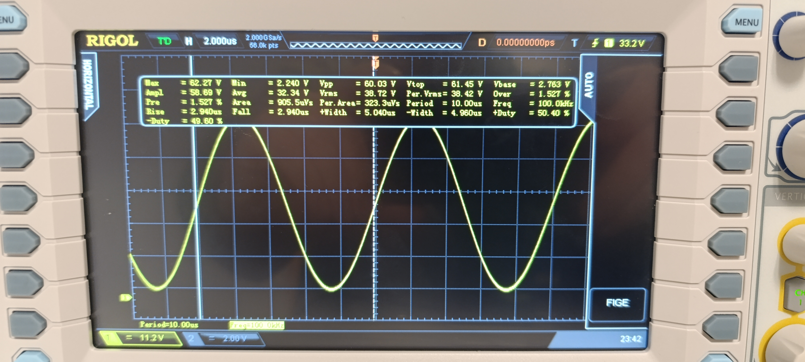
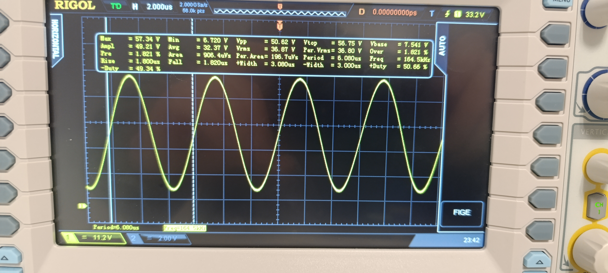

Conception et implémentation d'un générateur sinusoïdal à fréquence variable (10 Hz – 163,84 kHz) sur FPGA Nexys A7-100T (AMD Artix-7). Étude comparative de quatre architectures, de la division d'horloge naïve à la synthèse numérique directe (DDS) avec accumulateur de phase 48 bits, atteignant une précision de 3,55 × 10⁻⁷ Hz.
Ce projet de Master 2 Systèmes Embarqués (INSSET) explore la génération de signaux sinusoïdaux à fréquence programmable sur FPGA, problème fondamental en instrumentation électronique et traitement du signal. À partir d'un simple diviseur d'horloge, le projet démontre par une analyse mathématique rigoureuse pourquoi les approches naïves sont intrinsèquement limitées en précision, et comment l'architecture DDS (Direct Digital Synthesis) résout ces limitations.
Quatre architectures sont conçues, implémentées en VHDL et validées expérimentalement sur oscilloscope numérique Rigol. La progression pédagogique va de la division entière (erreur 22% à 80 kHz) jusqu'au DDS avec accumulateur de phase 48 bits (erreur < 0,004 Hz), soit 7 ordres de grandeur d'amélioration. La Phase 4 démontre qu'un DDS complet peut être réalisé sans écrire une seule ligne de code HDL grâce aux blocs IP Xilinx.
Fréquence de sortie : fout = 10 × (1 + SW) Hz, avec SW ∈ [0, 16 383]
Plage : 10 Hz à 163 840 Hz, pas de 10 Hz
Contrôle : 14 interrupteurs binaires (switches)
Sortie : Signal analogique via DAC 8 bits R-2R sur port Pmod JA
Horloge système : fclk = 100 MHz
Cible : Nexys A7-100T (AMD Artix-7 XC7A100T-1CSG324C)
Validation de l'architecture de base : diviseur d'horloge → compteur 8 bits → table sinusoïdale ROM
256×8 → registre DAC. Le diviseur M = ⌊100 MHz / (256 × 1 kHz)⌋ = 390 donne fréelle = 999,36 Hz
(erreur 0,06%). Cette phase valide le principe de génération par table de correspondance.
• ROM 256 échantillons 8 bits (valeurs [0, 255])
• DAC R-2R sur Pmod JA : résolution ΔV ≈ 12,9 mV
• Signal mesuré à ≈ 999 Hz sur oscilloscope
Extension avec diviseur M variable selon les switches. Analyse mathématique démontrant la limitation
fondamentale : l'erreur relative est bornée par 1/M, donc croît inexorablement avec
la fréquence. À 80 kHz, M ≈ 4 → erreur de 22%. À 100 kHz, M = 3 → erreur de 28%.
• Arithmétique virgule fixe (K = 1024) : réduit l'erreur d'un facteur ×1130,
mais ne résout pas le problème fondamental
• Jitter d'échantillonnage inhérent à la méthode (raies parasites)
• Limitation structurelle inévitable : seul un changement de paradigme peut résoudre
L'architecture DDS remplace la division par une accumulation de phase :
φ[n+1] = (φ[n] + Δφ) mod 248. Le pas de phase Δφ = (1 + SW) × KDDS
avec KDDS = 28 147 497 donne une erreur constante de 0,000002%,
indépendante de la fréquence.
• Pipeline 5 étages @ 100 MHz : anti-rebond (21 ms) → multiplication DSP48 →
accumulateur 48 bits → table sinus → registre DAC
• Résolution fréquentielle : Δf = 100 MHz / 248 ≈ 3,55 × 10⁻⁷ Hz
• Ressources FPGA : 123 LUTs (0,19%), 1 DSP48, 0,5 BRAM — design extrêmement compact
• Module VHDL autonome (~200 lignes), zéro IP externe
Démonstration qu'un DDS complet peut être réalisé sans une seule ligne de code HDL,
en utilisant exclusivement des blocs IP Xilinx. L'idée clé : remplacer la multiplication temps réel
par une table de 16 384 pas de phase pré-calculés stockée en BRAM (.coe).
• 5 blocs IP : Block Memory Generator (BRAM Δφ 16384×48 bits) → Accumulator
(c_accum 48 bits) → Slice (8 MSB) → Block Memory Generator (ROM sinus 256×8) → Constant
• Arrondi individuel par fréquence → erreur bornée à 1,78 × 10⁻⁷ Hz (amélioration ×42 000
aux hautes fréquences vs Phase 3)
• Ressources : 95 LUTs, 22 BRAMs (16,3%), 0 DSP48
Défi 1 — Mémoire insuffisante pour l'approche purement mémorielle :
Stocker 16 384 fréquences sous forme de 256 échantillons chacune nécessiterait 32 768 Kb,
soit 6,7 fois la BRAM disponible sur la Nexys A7-100T.
Solution : Stocker uniquement le pas de phase Δφ (48 bits) au lieu des
256 échantillons (2 048 bits) → facteur de compression de 43.
Défi 2 — Choix de la largeur d'accumulateur :
Un accumulateur 32 bits donne Δf = 0,023 Hz (erreur visible à l'oscilloscope).
Un accumulateur 64 bits est surdimensionné (Δf = 5,4 × 10⁻¹² Hz).
Solution : Accumulateur 48 bits retenu — résolution
3,55 × 10⁻⁷ Hz, compatible DSP48E1 Artix-7 (multiplieur 25×18 bits, accumulateur 48 bits).
Défi 3 — Précision de mesure limitée par l'oscilloscope :
À 163,84 kHz, l'écart apparent de 660 Hz (0,4%) est dû à l'incertitude temporelle de
l'oscilloscope (∼0,01%), non au DDS.
Conclusion : L'erreur réelle du DDS (< 0,004 Hz) est 7 ordres
de grandeur en dessous de la résolution de l'instrument de mesure.
| Critère | Phase 1 | Phase 2 | Phase 3 | Phase 4 |
|---|---|---|---|---|
| Méthode | Diviseur | Div. Virgule fixe | DDS VHDL | DDS IP |
| Erreur max | 0,1% | 0,017% | 0,000002% | 10⁻⁷ Hz |
| LUT | — | — | 123 (0,19%) | 95 (0,15%) |
| DSP48 | 0 | 0 | 1 (0,42%) | 0 |
| BRAM | 0 | 0 | 0,5 (0,37%) | 22 (16,3%) |
| Code VHDL | ~100 lig. | ~150 lig. | ~200 lig. | 0 ligne |
⚡ Performances validées expérimentalement : Accumulateur de phase 48 bits @ 100 MHz — résolution fréquentielle 3,55 × 10⁻⁷ Hz — plage complète 10 Hz à 163,84 kHz en 16 384 pas de 10 Hz — erreur constante < 0,000002%.
Plateforme : Nexys A7-100T (AMD Artix-7 XC7A100T, 63 400 LUTs, 240 DSP48E1, 4 860 Kb BRAM)
Environnement : Vivado 2024 (synthèse VHDL + Block Design graphique)
DAC : R-2R 8 bits sur Pmod JA — Vref = 3,3 V, résolution 12,9 mV
Mesures : Oscilloscope numérique Rigol (mode Auto Measure)
Contexte : Projet Master 2 INSSET — Module Systèmes Embarqués / FPGA

📷
f = 10 kHz — Période 100 µs
SW = 999 · Erreur mesurée : 0 Hz

📷
f = 100 kHz — Période 10 µs
SW = 10 000 · Écart mesuré : 10 Hz (0,01%)

📷
f = 163,84 kHz — Période 6,1 µs
SW = 16 383 · Fréquence max

📷
f = 10 kHz — Période 100 µs
SW = 999 · Sinusoïde plus lisse (sans rebonds)

📷
f = 100 kHz — Période 10 µs
SW = 9 999 · Erreur mesurée : 0 Hz (0,00%)

📷
f = 163,84 kHz — Période 6,1 µs
SW = 16 383 · Fréquence max
💡 Pour ajouter les photos : déposer les captures oscilloscope dans
assets/projets/fpga-dds/ avec les noms indiqués ci-dessus.
Changer de paradigme : La division d'horloge, intuitive et simple, est
fondamentalement limitée. L'accumulateur de phase — une simple addition répétée — offre
7 ordres de grandeur de précision supplémentaire.
Ressources FPGA : Un design DDS complet n'utilise que 0,19% des LUTs
disponibles. La richesse du FPGA (DSP48, BRAM) permet des architectures très efficaces.
L'instrument limite la mesure : La précision du DDS dépasse celle de
l'oscilloscope de laboratoire — facteur limitant à identifier pour ne pas confondre
erreur du générateur et erreur de mesure.